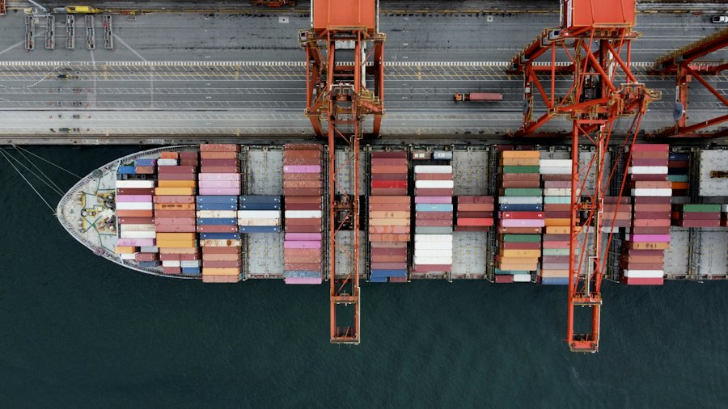

El ejército de EE.UU. informó que el sábado se cumplieron 130 días consecutivos de su bloqueo naval contra Irán. Más de 14 petroleros se reunieron cerca de la isla de Kharg y, según Kpler, unos 43 millones de barriles de crudo iraní siguen varados dentro de la zona bloqueada. El tránsito por Ormuz está 65% por debajo de los niveles previos a la guerra: UKMTO contó 263 cruces en la semana al 18 de noviembre, contra 308 la semana anterior, con seis ataques a petroleros. Un supuesto petrolero iraní que figuraba cruzando el estrecho resultó ser una señal falsa, según TankerTrackers.
¿Cómo afecta esto a tu operación o estudio?
Si cotizás fletes o insumos que dependen del petróleo, conviene seguir esta semana: una escalada en Ormuz suele trasladarse rápido a recargos de combustible.
Según un informe sectorial del tercer trimestre con datos del INDEC, las exportaciones de combustibles y energía sumaron US$12.452 millones en enero-septiembre de 2026, un 53% más que en el mismo lapso de 2025, y explicaron el 16,1% de todo lo exportado. Las importaciones alcanzaron US$3.025 millones, con un saldo positivo de US$9.427 millones, récord para el período. Las cantidades exportadas crecieron 29,5% y los precios 18,6%; las cantidades importadas cayeron 10,7%. Estados Unidos (24%) y Chile (19%) son los principales destinos.
¿Cómo afecta esto a tu operación o estudio?
Más dólares de la energía ayudan a sostener la oferta en el mercado de cambios. Para quien estudia comex, muestra cómo un sector puede dar vuelta la balanza en pocos años.
La Aduana de EE.UU. (CBP) publicó una regla interina para las empresas extranjeras que figuran como importador de registro: deberán ser participantes validados de CTPAT o trabajar con un agente de aduana con licencia y validación CTPAT. Rige desde el 5 de enero de 2027, con cumplimiento total exigido el 6 de mayo de 2027, y suma requisitos de información en los formularios CBP 3461 y 7501. Una falla en el cumplimiento podría demorar la liberación de la mercadería.
¿Cómo afecta esto a tu operación o estudio?
Si vendés a EE.UU. como importador de registro, hablá ya con tu agente de aduana allá para confirmar que tiene validación CTPAT.
El riesgo país subió 236 puntos en la semana (+28%) y cerró en 1.070, su nivel más alto desde octubre de 2025. Los bonos Globales cayeron 7% en promedio y las acciones argentinas en dólares 11%. El mayorista subió 2,4% en la semana hasta $1.580, el contado con liquidación terminó en $1.794,18 (+7,2%) y la brecha llegó a 13,6%, la más amplia desde abril de 2025. Las reservas bajaron US$187 millones, a US$49.362 millones. Influyeron la caída de Wall Street (S&P 500 -10,5%) y la devaluación del real, que pasó a 5,95 por dólar.
¿Cómo afecta esto a tu operación o estudio?
Si tenés pagos al exterior o financiación en dólares, revisalos el lunes: el contexto se puso más tenso.
El dólar mayorista subió $15 (1%) y cerró en $1.580; en la semana subió 2,4%, la mayor suba semanal desde abril de 2025. El contado con liquidación terminó en $1.782,10 y la brecha con el mayorista llegó a 12,8%, la más alta desde la salida del cepo para personas en abril de 2025. El BCRA no compró dólares y las reservas brutas bajaron US$81 millones, a US$49.362 millones. El techo de la banda cambiaria está en $1.976,68.
¿Cómo afecta esto a tu operación o estudio?
Si importás, actualizá tus precios de reposición con $1.580 de referencia.
Según datos del INDEC de octubre, el flete representa 64,2 dólares por cada 1.000 dólares importados a valor FOB, 17,4% más que un año antes. El flete promedio llegó a 143,1 dólares por tonelada (+19%), el más alto desde comienzos de 2025. Desde China, que explica el 41,1% del total, el flete fue de 398,7 dólares por tonelada (+54,3%) y equivale a 106 dólares por cada 1.000 FOB; desde el Mercosur, 70,9 dólares por tonelada.
¿Cómo afecta esto a tu operación o estudio?
Al calcular el costo de importar desde China, sumá al menos 10% de flete sobre el FOB y pedí varias cotizaciones.
Las exportaciones de combustibles y energía sumaron US$1.734 millones en octubre (+93,9%) y aportaron US$1.600 millones al superávit, el 47% del saldo de US$3.394 millones. El petróleo crudo exportó US$1.169 millones, más del doble que un año antes, y el maíz US$887 millones (+139,3%). En enero-octubre el crudo suma US$8.923 millones, por encima de la harina y pellets de soja (US$7.891 millones), y las exportaciones totales (US$87.328 millones) ya superan a todo 2025.
¿Cómo afecta esto a tu operación o estudio?
Si trabajás con energía o agro, son los sectores que más empujan las exportaciones este año.
Según datos del INDEC, las compras vía courier sumaron US$1.064 millones entre enero y octubre de 2026, 53,2% más que en el mismo período de 2025; solo en octubre fueron US$104 millones (+12,2%). El régimen permite hasta cinco envíos por persona por año, de hasta US$3.000 y 50 kilos cada uno, con no más de tres unidades iguales y para uso personal. Los primeros US$400 FOB de cada envío no pagan derechos ni tasa de estadística, pero sí IVA.
¿Cómo afecta esto a tu operación o estudio?
Antes de comprar, revisá cuántos envíos te quedan en el servicio "Envíos Postales Internacionales" de ARCA.
Tesla empezó a vender en Argentina el Model 3 y el Model Y, importados de China por venta directa, con cinco versiones entre US$41.590 y US$54.590. Las primeras entregas están previstas para marzo y abril de 2027. Según la nota, las primeras unidades entran con arancel de importación de 0% dentro del cupo anual de 50.000 vehículos electrificados sin arancel extrazona. El lanzamiento oficial es hoy en La Boca.
¿Cómo afecta esto a tu operación o estudio?
Si importás autos o autopartes, seguí cómo se reparte el cupo de electrificados: define quién entra sin arancel.
Por la Resolución 2003/2026 del Ministerio de Economía, se unifican las exigencias para el cupo anual de 20.000 toneladas de cortes enfriados y congelados con arancel cero hacia la Unión Europea, y se derogan las resoluciones 1466/2011 y 145/2014. Los registros se integran con el SIF, la identificación electrónica individual del ganado y el Sigsa del SENASA. La hacienda apta para la UE se faena primero, se valida la letra "W" en medias reses y las cajas deben ir cerradas con fajas de seguridad, número de tropa y la sigla "SC-W".
¿Cómo afecta esto a tu operación o estudio?
Si exportás carne a la UE dentro del cupo, revisá trazabilidad, faena y rotulado con los nuevos requisitos.
Según un análisis de El Economista sobre los datos del INDEC, en octubre los precios de exportación subieron 19,7% y las cantidades solo 5,6%. De unos US$2.100 millones adicionales, US$1.656 millones se explican por precios y US$442 millones por volumen. Las importaciones cayeron 17,3% en cantidades; las piezas para bienes de capital bajaron 27,7% en cantidades.
¿Cómo afecta esto a tu operación o estudio?
Para entender tu mercado, separá precio de volumen: vender lo mismo más caro no es crecer.
En la cumbre de APEC en Shenzhen (18 y 19 de noviembre), Trump y Xi acordaron redactar un plan de acción para una relación de "estabilidad estratégica", sin contenido ni plazo. No se anunciaron cambios de aranceles: la tregua de Busan vence el 10 de enero de 2027. Hasta esa fecha siguen suspendidos el arancel adicional chino de 24% a bienes de EE.UU. (el 10% se mantiene), los controles chinos a tierras raras y las tasas portuarias a buques vinculados a EE.UU.
¿Cómo afecta esto a tu operación o estudio?
Si importás de China para el verano, planificá embarques sabiendo que el 10 de enero puede cambiar el escenario.
El Brent caía 1,79% a US$90,33 y se encaminaba a una baja semanal de 6%; el WTI bajaba a US$81,59. Es la tercera semana seguida de caída: el tránsito por Ormuz volvió a niveles cercanos a los de antes de la guerra y crecen las expectativas de exceso de oferta, aunque siguen los incidentes (dos petroleros chocaron con minas). La OPEP+ se reúne el 29 de noviembre.
¿Cómo afecta esto a tu operación o estudio?
Pedile a tu forwarder que actualice el BAF: con el crudo en baja, el recargo debería bajar.
Según el INDEC, en octubre las exportaciones sumaron US$10.061 millones (+26,4% interanual), un récord histórico, y las importaciones US$6.668 millones (-6,7%). El superávit fue de US$3.394 millones. Combustibles y energía crecieron 93,9% (US$1.734 millones); las MOA sumaron US$3.314 millones y las MOI US$2.685 millones. En enero-octubre las exportaciones suben 22,1% y las importaciones bajan 2,9%.
¿Cómo afecta esto a tu operación o estudio?
Si importás, el dato confirma un mercado interno más flojo: las importaciones caen en el año.
El dólar mayorista subió $5,50 y cerró en $1.565, cuarta suba seguida y nuevo máximo nominal. El BCRA compró solo US$3 millones, la menor compra desde que empezó su programa de acumulación; en noviembre lleva US$344 millones. Las reservas brutas bajaron US$108 millones por la caída del oro.
¿Cómo afecta esto a tu operación o estudio?
Tomá $1.565 como referencia para cotizar y revisá tus pagos pendientes al exterior.
El dólar mayorista subió 0,5% y cerró en $1.559,50; acumula 1,7% en noviembre y 7,2% en el año, contra 26,3% de inflación. El contado con liquidación terminó en $1.718,16 y la brecha con el mayorista se amplió a 10,2%, la mayor desde la crisis cambiaria de octubre de 2025. El BCRA compró US$11 millones y las reservas brutas bajaron US$190 millones, a US$49.511 millones, sobre todo por la caída de 3,5% del oro. El real se debilitó a 5,87 por dólar y el riesgo país bajó a 848 puntos.
¿Cómo afecta esto a tu operación o estudio?
Para cotizar mañana tomá $1.559,50 de referencia; si vendés a Brasil, el real más débil encarece tu producto allá.
En la cumbre empresarial de APEC en Shenzhen, Xi Jinping pidió apoyar el "comercio libre y abierto" y dijo que China bajará aranceles, ampliará el acceso a su mercado en manufacturas y servicios y profundizará reformas. Reafirmó el sistema multilateral con centro en la OMC. Ese mismo día tenía previsto reunirse con Trump y luego en una cumbre a tres con Putin. No se anunciaron tasas concretas.
¿Cómo afecta esto a tu operación o estudio?
Si exportás a China, seguí qué rebajas concretas salen de APEC en los próximos días.
Por la Resolución 956/2026, publicada hoy en el Boletín Oficial, el SENASA prohibió en todo el país el uso y la venta de productos veterinarios promotores de crecimiento con sustancias beta agonistas o tirostáticas. Termina así la excepción de 2011 (Resolución 1458/2011) que permitía usar ractopamina en cerdos durante casi 15 años. Lo pidieron cinco entidades de la cadena porcina (FPA, CAEGP, CAICHA, FIFRA y CAENA) y el SENASA dijo que mantener la excepción podía comprometer la estrategia de comercio internacional de carnes.
¿Cómo afecta esto a tu operación o estudio?
Si producís, exportás o importás insumos veterinarios para cerdos, revisá que ningún producto tenga beta agonistas: desde hoy están prohibidos.
Según la consultora Invecq, las exportaciones mineras sumaron US$6.700 millones entre enero y septiembre de 2026 y el sector apunta a su mejor año. En el RIGI hay 13 proyectos mineros aprobados por más de US$27.000 millones. Las cifras para 2027 en adelante son proyecciones de la consultora, no datos oficiales.
¿Cómo afecta esto a tu operación o estudio?
Si vendés insumos, servicios o logística a la minería, es un sector que crece y compra.
El canciller Pablo Quirno confirmó que la visita oficial de Milei a China sigue sin fecha y que el Gobierno cierra "un par de temas" antes de fijarla. Mientras tanto se busca firmar más de siete protocolos para habilitar nuevas exportaciones argentinas al mercado chino y se negocia una reducción recíproca de aranceles. Los trabajos están a cargo del secretario de Comercio, Pablo Lavigne, y de la subsecretaria de Comercio Exterior, Carolina Cuenca, con la Embajada china y el sector privado.
¿Cómo afecta esto a tu operación o estudio?
Si exportás alimentos, seguí qué productos entran en los protocolos: es la puerta para vender a China.
Un informe del IIEP (UBA) dividió la industria en tres bloques entre 2022 y 2026: las ramas que compiten con importaciones cayeron 19%, las orientadas al mercado interno con poca importación cayeron 12,2% y las exportadoras mejoraron 2,5%. Entre las que compiten con importados, maquinaria y equipo bajó 36%, metales 15% y químicos 13%. La molienda de oleaginosas creció 16%.
¿Cómo afecta esto a tu operación o estudio?
Si importás maquinaria, metales o químicos, competís en los rubros donde más cayó la industria local: más mercado, pero también más riesgo de antidumping.
El WTI bajaba 0,65% a US$85,45 y el Brent 0,17% a US$92,98 tras un aumento de 5,28 millones de barriles en los inventarios de crudo de EE.UU. (datos del API). Analistas de LSEG dijeron que normalizar los flujos por Ormuz "todavía no es posible" en las condiciones actuales; un buque de GLP fue alcanzado por un proyectil frente a Omán el lunes y su tripulación fue evacuada.
¿Cómo afecta esto a tu operación o estudio?
Al cotizar flete, preguntá cuánto pesan BAF y recargos de riesgo: el petróleo no termina de bajar.
Según el marco comercial anunciado con EE.UU., Tailandia eliminará aranceles a 99% de los bienes estadounidenses y permitirá hasta 1 millón de toneladas de maíz de EE.UU. con arancel cero (antes el cupo era de 54.700 toneladas al 20%). Las compras comprometidas superan US$20.000 millones y la harina de soja tendrá arancel de 2%. EE.UU. aplica un 12,5% (Sección 301) a la mayoría de los productos tailandeses. El texto legal final todavía no se firmó.
¿Cómo afecta esto a tu operación o estudio?
Si exportás maíz o harina de soja al Sudeste Asiático, tené en cuenta la nueva competencia de EE.UU. en Tailandia.
El paso de buques por el Estrecho de Magallanes subió más de 70% interanual en agosto y septiembre, según datos de la Gobernación Marítima de Punta Arenas citados por Bloomberg. El aumento se concentra en buques de 60.000 a 65.000 toneladas de arqueo. En Panamá, los turnos prioritarios se subastaron a hasta US$4 millones por buque y luego superaron los US$5 millones.
¿Cómo afecta esto a tu operación o estudio?
Si importás de Asia vía costa oeste o exportás al Pacífico, preguntá a tu forwarder qué ruta usa y cuántos días suma.
En la cumbre APEC de Shenzhen, China amplió el alivio arancelario a exportaciones canadienses por unos 400 millones de dólares canadienses (US$280 millones), incluyendo cortes congelados de cerdo, pescado y mariscos. A cambio, Canadá extiende por dos años exenciones arancelarias a ciertos productos de acero y aluminio chinos. En enero Canadá ya había bajado el arancel a los autos eléctricos chinos de 100% a 6,1%.
¿Cómo afecta esto a tu operación o estudio?
Si exportás pesca o carne a China, mirá cómo queda tu arancel frente al de Canadá.
La Mesa Política decidió enviar al Congreso "en los próximos días" el Acuerdo sobre Comercio e Inversiones Recíprocos (ARTI) con EE.UU., firmado el 5 de febrero y adaptado en octubre. EE.UU. elimina aranceles recíprocos a 1.675 productos argentinos, lo que según Cancillería permitiría recuperar unos US$1.013 millones en exportaciones. A cambio, Argentina se compromete a eliminar la tasa de estadística y las licencias de importación, y a abrir un cupo de 80.000 toneladas anuales de carne vacuna estadounidense sin arancel. Se trataría en sesiones extraordinarias de diciembre y rige 60 días después de que ambos países completen sus trámites.
¿Cómo afecta esto a tu operación o estudio?
Si exportás a EE.UU., revisá si tu posición está entre los 1.675 productos; si importás, seguí la eliminación de la tasa de estadística.
El dólar mayorista subió $1 y cerró en $1.552, un nuevo récord nominal. El BCRA aceleró sus compras: adquirió u$s74 millones en la rueda y acumula u$s330 millones en noviembre. Las reservas brutas subieron u$s277 millones, a u$s49.741 millones.
¿Cómo afecta esto a tu operación o estudio?
Para cotizar mañana, tomá $1.552 como referencia del mayorista.
El Brent subía US$1,06 (1,15%) a US$93,50 y el WTI a US$86,56, aunque en noviembre acumulan caídas de 20% y 16%. Un barco fue alcanzado dos veces en Ormuz y su tripulación no estaba localizada; drones iraníes atacaron un radar de EE.UU. en Bahréin y los hutíes dijeron que lanzaron drones contra estaciones del oleoducto saudí Este-Oeste. La Agencia Internacional de Energía prevé excedente porque las exportaciones del Golfo se recuperan y los costos de transporte bajaron mucho.
¿Cómo afecta esto a tu operación o estudio?
Al renegociar fletes, preguntá si el BAF (recargo por combustible) ya bajó: el petróleo cayó cerca de 20% en noviembre.
Por la Resolución 955/2026, publicada hoy en el Boletín Oficial, el SENASA derogó la Resolución 79/2023 y cambió los Tratamientos de Fumigación Oficial en comercio internacional (excepto frutas y hortalizas). Sus inspectores dejan de verificar habilitaciones provinciales y se limitan a lo fitosanitario. Antes del tratamiento, la fumigadora debe presentar la nómina del personal, el producto con su marbete, registro y vencimiento, y los cálculos de dosis. El bromuro de metilo queda restringido a cuarentenas exigidas por el país comprador. Rige desde el 18 de noviembre de 2026.
¿Cómo afecta esto a tu operación o estudio?
Si exportás productos vegetales que requieren fumigación, confirmá con tu fumigadora que presente la documentación nueva desde el 18/11.
Leer en Noticias Agropecuarias (Boletín Oficial) →
Inspectores de la Aduana clausuraron los dos únicos depósitos fiscales de Salta, COZOFRA (General Güemes) y COCEL (ciudad de Salta). Las importaciones y exportaciones quedaron paralizadas durante semanas y las empresas tuvieron que trasladar sus operaciones a Palpalá, Jujuy, con más costos de transporte y tiempos de trámite. Uno de los depósitos sigue operando con restricciones. Fuentes del sector estiman pérdidas de "varios millones de dólares" y un diputado pidió informes al Ejecutivo.
¿Cómo afecta esto a tu operación o estudio?
Si operás por el NOA, tené un depósito fiscal alternativo (Jujuy) cotizado y sumá días extra a tus plazos.
Según el Monitor de Comercio e Integración 2026 del BID, las exportaciones argentinas de bienes subieron 24,4% interanual en el primer semestre de 2026, impulsadas por petróleo, minería y agro, mientras las importaciones cayeron 18,8%. En cambio, la inversión extranjera directa promedió US$8.019 millones por año entre 2023 y 2025, un 20,4% menos que en 2012-2014. El BID dice que la apertura comercial "por sí sola no basta" y ve en el acuerdo Mercosur-UE una oportunidad si se acompaña con reformas.
¿Cómo afecta esto a tu operación o estudio?
Para estudiar: buen informe para entender la diferencia entre comercio e inversión, y por qué el acuerdo con la UE importa más allá de los aranceles.
El real llegó a 5,78-5,79 por dólar, su nivel más alto desde abril de 2025, tras subir otro 2% el lunes; desde la reelección de Lula acumula una depreciación de 16%. En Argentina el impacto fue limitado hasta ahora: el dólar oficial minorista subió $5 a $1.575 y acumula 2% desde fines de octubre. Con una inflación de 26% en el año y un tipo de cambio que subió solo 5%, la economía argentina se encareció en dólares, y la caída del real lo acentúa.
¿Cómo afecta esto a tu operación o estudio?
Si exportás a Brasil, revisá precios: tu cliente ahora paga 16% más en reales. Si importás de Brasil, es buen momento para pedir cotización.
Los 21 miembros de APEC, que concentran algo más de la mitad del comercio mundial, se reúnen esta semana en Shenzhen con bajas expectativas. Después de que la Corte Suprema de EE.UU. anulara muchos aranceles de Trump en febrero de 2026, Washington aplicó nuevos aranceles de hasta 12,5% a 60 economías de Asia y América Latina por supuestos esfuerzos insuficientes contra el trabajo forzoso. Siguen vigentes los aranceles sectoriales al acero, los autos y la madera.
¿Cómo afecta esto a tu operación o estudio?
Si exportás a EE.UU., verificá qué arancel adicional aplica hoy a Argentina antes de cerrar precios.
El dólar mayorista subió $7,50 (0,49%) y cerró en $1.551, un nuevo máximo nominal. El BCRA compró u$s33 millones y acumula u$s256 millones en noviembre, pero las reservas brutas cayeron u$s133 millones, a u$s49.464 millones. El riesgo país subió 25 puntos, a 855, y el Merval cayó 4,3% en pesos.
¿Cómo afecta esto a tu operación o estudio?
Para cotizar mañana, tomá $1.551 como base del mayorista y sumá un margen: la tendencia de la semana es de suba.
Según un informe de la Bolsa de Comercio de Rosario, entre enero y octubre de 2026 Argentina exportó más de 101 millones de toneladas de granos y subproductos, un 13% más que el año anterior y unos 10 millones de toneladas por encima del récord previo. El maíz sumó 37,1 millones de toneladas, el trigo 14,5 millones (+45%) y el complejo girasol más de 6,7 millones. Solo el 68,8% de la producción 2025/26 estaba comprometida, el nivel más bajo de la serie para esta época.
¿Cómo afecta esto a tu operación o estudio?
Si trabajás en logística, todavía queda mucha cosecha sin vender: el movimiento en puertos seguirá alto los próximos meses.
El centro marítimo británico UKMTO reportó dos ataques a buques en Ormuz el 16 de noviembre. Uno, que salía del estrecho, fue alcanzado por un "proyectil no identificado" y tuvo un incendio en la sala de máquinas. Otro quedó inmovilizado con fuego en la sala de máquinas a unas siete millas náuticas al norte de Khasab, Omán. Las tripulaciones están a salvo. El UKMTO no identificó los barcos ni a los responsables.
¿Cómo afecta esto a tu operación o estudio?
Si tu carga viene por rutas que tocan Medio Oriente, pedile a tu forwarder un plan B de ruta y tiempos.
El primer ministro canadiense, Mark Carney, dijo desde Camboya que Canadá podría buscar inversiones de automotrices chinas si las negociaciones con EE.UU. no preservan una industria automotriz integrada en Norteamérica, aunque exigiría fabricación real en Canadá y no solo ensamblado. En enero, Canadá había bajado el arancel a los eléctricos chinos de 100% a 6,1%, con un cupo inicial de 49.000 vehículos por año, a cambio de que China bajara aranceles a productos agrícolas como la canola. La Casa Blanca lo criticó.
¿Cómo afecta esto a tu operación o estudio?
Para estudiar: buen caso de cómo un país usa un cupo arancelario como moneda de cambio para abrir mercados a sus exportaciones.
Por la Resolución 167/2026 de la Subdirección General de Operaciones Aduaneras Metropolitanas, publicada hoy en el Boletín Oficial, ARCA habilitó como depósito fiscal general a Depósito Moreiro Hnos S.R.L., en Lanús, con una superficie de 19.425,73 m². Sirve para operaciones de importación y exportación y para mercadería registrada en otras aduanas. La habilitación es por 10 años, renovables de forma no automática, y queda bajo control de la Aduana de Buenos Aires.
¿Cómo afecta esto a tu operación o estudio?
Si importás por Buenos Aires, sumá este depósito a la lista para cotizar almacenaje fiscal y comparar costos.
Leer en Boletín Oficial — Resolución 167/2026 ARCA →
Según datos de Descartes publicados por FreightWaves, EE.UU. importó 2.674.808 TEU en octubre de 2026, un récord que supera el máximo de mayo de 2022. Es 5% más que en septiembre y 16% más que un año antes. Desde China llegaron 987.805 TEU (+22,9% interanual), el 36,9% del total. La demora promedio en 10 puertos subió a 6,3 días, frente a 4,2 días en junio.
¿Cómo afecta esto a tu operación o estudio?
Si traés contenedores desde China, reservá espacio con anticipación: la demanda de EE.UU. compite por los mismos barcos.
La presidenta de México, Claudia Sheinbaum, viaja a Shenzhen para la cumbre APEC (actividades oficiales del 17 al 19 de noviembre) y se reunirá con Xi Jinping. Entre enero y septiembre, el comercio México-China sumó US$117.080 millones (+12,8%), con un déficit mexicano de US$94.878 millones. Desde enero, México aplica aranceles de 5% a 50% en 1.463 fracciones de 17 sectores a países sin tratado, como calzado, juguetes y autos, lo que golpea sobre todo a China.
¿Cómo afecta esto a tu operación o estudio?
Para estudiar: compará la política arancelaria de México con la argentina; si exportás a México, revisá si tu producto tiene preferencia por ACE con Argentina.
Desde el lunes 16 de noviembre, ARCA habilita la adhesión al plan anunciado por Luis Caputo: se pueden incluir en Mis Facilidades las obligaciones vencidas hasta el 31 de octubre. Micro y pequeñas empresas acceden a hasta 18 cuotas (medianas, hasta 15) y en retenciones y percepciones a hasta 9 (medianas, hasta 7). El pago a cuenta es de 5% para micro y pequeñas y de 10% para medianas, con una tasa de 2,75% mensual. Hace falta certificado MiPyME vigente. Los embargos están suspendidos hasta mayo de 2027.
¿Cómo afecta esto a tu operación o estudio?
Si tu empresa tiene deudas con ARCA vencidas hasta octubre, revisá con tu contador si conviene entrar: la tasa es de 2,75% mensual y necesitás el certificado MiPyME al día.
El dólar mayorista ronda los $1.550 y el contado con liquidación (CCL) cerca de $1.670: una brecha de $120, o 7,7%. En el último mes el oficial subió 1,8% y el CCL 3,5%, según Balanz. El dólar oficial subió solo 6% en lo que va del año, unos 20 puntos menos que la inflación.
¿Cómo afecta esto a tu operación o estudio?
Si tenés que pagar importaciones en las próximas semanas, seguí la brecha: si sigue subiendo, conviene no dejar todo para último momento.
Con el riesgo país cerca de 800 puntos y la emisión de Bonares suspendida desde agosto, el Tesoro recurre a comprarle dólares al BCRA: ya superó su límite de US$6.700 millones para 2026 y compró US$160 millones extra. Antes de fin de año vencen unos US$1.000 millones con organismos multilaterales y a principios de enero unos US$4.400 millones con bonistas. Las compras del Tesoro explican más del 40% de los más de US$16.000 millones que compró el BCRA este año.
¿Cómo afecta esto a tu operación o estudio?
Para seguir: los pagos de enero pueden mover el dólar financiero; si importás, tenelo en el calendario.
La Guardia Revolucionaria de Irán dijo que dos petroleros chocaron con minas y explotaron el lunes, y que seis se incendiaron en incidentes similares entre domingo y lunes; Reuters no pudo verificarlo. El Brent subía 0,1% a US$95,89 y el WTI a US$88,65. La Agencia Internacional de Energía espera un excedente de 1,7 millones de barriles diarios en el cuarto trimestre, pero los fletes de petroleros siguen altos por el riesgo.
¿Cómo afecta esto a tu operación o estudio?
Al cotizar fletes, pedí el desglose del BAF (recargo por combustible): es la parte que más se mueve con Ormuz.
Marcela Cristini, economista de FIEL, dijo que en los 12 meses hasta septiembre las exportaciones argentinas "ya superamos el hito de los USD 100.000 millones" y que el valor exportado crece a dos dígitos en los últimos dos años. Argentina vende a más de 120 países. Advirtió que, como la deuda pública cuesta renovarse, parte del saldo comercial se usará para pagar deuda mediante compras del Tesoro al Banco Central. Para 2027 espera "probablemente, un nuevo año de crecimiento exportador".
¿Cómo afecta esto a tu operación o estudio?
Para estudiar: muestra cómo se conectan exportaciones, reservas y deuda en la economía argentina.
Paraguay exportó USD 17.815,6 millones entre enero y octubre de 2026, un 25% más que un año antes, con granos, aceite y harina de soja como principales productos. Las reexportaciones sumaron USD 4.444,1 millones y la maquila USD 1.300,2 millones (+26,4%). Las importaciones llegaron a USD 17.147,1 millones (+14,5%) y el saldo fue un superávit de USD 668,6 millones.
¿Cómo afecta esto a tu operación o estudio?
Para estudiar: la maquila paraguaya es un modelo que usan empresas de la región para producir y exportar con menos costos.
La Guardia Revolucionaria de Irán afirmó que un superpetrolero que llevaba "más de dos millones de barriles" de crudo chocó con una mina, se incendió y se hundió en aguas del sur del Golfo, mientras navegaba por una ruta "no autorizada". No dio el nombre ni el origen del barco y no hay confirmación independiente. El centro marítimo británico UKMTO dijo que la tripulación está a salvo y que se desconocen los daños y el impacto ambiental.
¿Cómo afecta esto a tu operación o estudio?
Si cotizás fletes esta semana, preguntá si hay recargos nuevos por riesgo de guerra o combustible antes de cerrar.
En la cumbre del ASEAN que empezó el 15 de noviembre en Manila, el primer ministro de Singapur, Lawrence Wong, le sugirió a Lula retomar la negociación de un acuerdo entre el Mercosur y el ASEAN, según el Palacio del Planalto. También repasaron la aplicación del tratado de libre comercio Mercosur-Singapur. El comercio de Brasil con el ASEAN fue de US$38.400 millones en 2025. Lula dijo que, tras los aranceles de Trump, el comercio con EE.UU. bajó al 9,2% del total brasileño.
¿Cómo afecta esto a tu operación o estudio?
Es solo una propuesta, sin fecha: seguila si exportás o pensás exportar al Sudeste Asiático.
Tucumán exportó US$833,4 millones entre enero y septiembre de 2026, un 19,7% más que un año antes. El complejo citrícola representa el 55,2% del total: limones frescos (US$183,3 millones), jugos concentrados (US$150,4 millones) y aceites esenciales de limón (US$126,7 millones). La Unión Europea compró el 30,1% y Estados Unidos el 25%, con una suba de 36,2%.
¿Cómo afecta esto a tu operación o estudio?
Para estudiar: buen caso de cómo un mismo producto se exporta fresco, como jugo y como aceite esencial.
Según el presidente del IPCVA, Georges Breitschmitt, China sigue siendo el principal mercado de la carne vacuna argentina: se lleva cerca del 60% del volumen exportado, pero representa alrededor del 40% del valor. La diferencia muestra que a China van cortes de menor precio, mientras otros destinos pagan más por kilo.
¿Cómo afecta esto a tu operación o estudio?
Si analizás un mercado de exportación, mirá volumen y valor por separado: el precio por kilo cambia mucho según el destino.
Según The Economist (publicado por La Nación), el valor del comercio mundial creció 18% interanual en los primeros ocho meses de 2026, aunque las medidas comerciales restrictivas aumentaron más del 60% en 2025 según un índice de economistas de la OMC y el FMI. El motor es la inteligencia artificial: el comercio de bienes de IA subió 55% y ya es cerca de una cuarta parte de las importaciones mundiales, frente al 15% en 2023. En EE.UU., las importaciones de bienes de IA subieron 69% mientras el resto cayó 10%, porque el 97% del hardware informático entra con exenciones arancelarias.
¿Cómo afecta esto a tu operación o estudio?
Para estudiar: buen ejemplo de que un arancel general casi nunca es parejo; siempre mirá las exenciones por posición arancelaria.
Entre enero y septiembre de 2026, Argentina exportó USD 7.753 millones de petróleo crudo, un 58,6% más que un año antes, y superó a la harina de soja, que sumó USD 6.971 millones (+7,4%). Los datos son del INDEC, procesados por la Bolsa de Comercio de Rosario. Según el BCRA, el saldo energético en el mercado de cambios fue de USD 7.890 millones.
¿Cómo afecta esto a tu operación o estudio?
Dato clave para estudiar: la estructura exportadora argentina ya no depende solo del agro.
Según el Informe Trimestral de Exportaciones Argentinas (UBA-CONICET, con datos del INDEC), las exportaciones de bienes del tercer trimestre de 2026 llegaron a US$27.756 millones, el valor más alto para ese período. En enero-septiembre sumaron US$77.158 millones, +21% interanual. Los precios subieron 11% y explican cerca de la mitad del aumento. En el trimestre, combustibles crecieron 32%, vehículos 16% y carnes y pesca 47%, mientras cereales y oleaginosas cayeron 10%.
¿Cómo afecta esto a tu operación o estudio?
Si buscás qué exportar o en qué sector trabajar, mirá los rubros que más crecen: combustibles, carnes y bienes diferenciados.
Santa Fe exportó USD 15.945 millones entre enero y septiembre de 2026, un 33,6% más que un año antes, frente a un 21,62% del promedio nacional, según Santa Fe Global y el IPEC con datos del INDEC. Es el 20,6% de lo que exporta el país y queda segunda detrás de Buenos Aires (USD 24.821 millones). El aceite de girasol en bruto creció 186,7% y llegó a USD 901,6 millones. Asia recibe el 45,6% de sus envíos e India es el principal comprador.
¿Cómo afecta esto a tu operación o estudio?
Si trabajás con Asia, India es hoy el principal destino de Santa Fe: buen mercado para seguir.
Leer en Diario Castellanos (Santa Fe Global / IPEC) →
Maersk anunció un recargo de temporada alta (Peak Season Surcharge, PSS) desde el 1 de diciembre de 2026 para la ruta Lejano Oriente-Norte de Europa: USD 500 por contenedor de 20 pies y USD 1.000 por los de 40 y 45 pies. Aplica a cargas que salen de China, Vietnam, Corea del Sur, Japón, Tailandia, Indonesia y otros orígenes asiáticos, y a casi todos los tipos de equipo, incluidos reefers.
¿Cómo afecta esto a tu operación o estudio?
Al pedir cotización de flete desde Asia, preguntá si incluye PSS y desde qué fecha: puede sumar cientos de dólares por contenedor.
La Guardia Revolucionaria de Irán dijo que dos petroleros explotaron y se incendiaron al chocar con minas en Ormuz el 14 de noviembre, en una ruta que Teherán declaró restringida; no hay confirmación independiente ni nombres de los barcos. Según UKMTO, hubo 308 tránsitos en los siete días al 13 de noviembre, cerca de 65% menos que antes de la guerra, y unas 211 embarcaciones esperaban ancladas al este del estrecho. Aun así, el petróleo cerró la semana en baja por la mayor producción de la OPEP+.
¿Cómo afecta esto a tu operación o estudio?
Si tenés carga que pasa por Medio Oriente, pedile a tu forwarder la ruta y el tiempo de tránsito actualizados.
Tesla confirmó que arrancará en el país con el Model 3 y el Model Y, ambos 100% eléctricos, y que los pedidos se abrirán el 20 de noviembre. Todavía no informó precios ni versiones. El Decreto 1128/2026, vigente desde el 1° de octubre, subió de US$16.000 a US$35.000 el valor FOB máximo de los autos eléctricos que entran sin el arancel extrazona del 35%. Además, el acuerdo con Estados Unidos fija un cupo anual de 10.000 vehículos de origen estadounidense con arancel cero.
¿Cómo afecta esto a tu operación o estudio?
Buen ejemplo para estudiar: la exención es solo del arancel extrazona; el auto igual paga el resto de los impuestos de importación.
El riesgo país de JP Morgan cerró la semana en 830 puntos básicos, 109 menos que la semana anterior, cuando había llegado a 939, su nivel más alto desde octubre de 2025. Los bonos en dólares subieron cerca de 3%. El dólar mayorista terminó en $1.543,50 y el oficial minorista del Banco Nación en $1.570. El BCRA compró USD 172 millones en tres ruedas y las reservas brutas quedaron en USD 49.594 millones.
¿Cómo afecta esto a tu operación o estudio?
Si financiás compras al exterior, seguí el riesgo país: cuando baja, los bancos suelen mejorar las tasas de prefinanciación.
Según datos de la Superintendencia de Riesgos del Trabajo, entre diciembre de 2025 y agosto de 2026 las empresas con al menos un trabajador registrado bajaron de 489.749 a 479.928, un saldo neto de 9.821 menos (-2%). Comercio perdió 4.156 empresas, industria manufacturera 1.841 y transporte y almacenamiento 1.663 (-4,9%, la mayor caída entre los sectores grandes). Es un saldo neto, no un conteo de cierres, y no incluye unipersonales.
¿Cómo afecta esto a tu operación o estudio?
Si dependés de un transportista o depósito chico, tené un proveedor alternativo cotizado por si deja de operar.
Juan Manuel Garzón, economista jefe del IERAL (Fundación Mediterránea), dijo que las exportaciones agroindustriales de 2026 son récord en volumen, cerca de un 10% más que en 2025, y que facturan unos US$43.000 millones, cerca del pico de US$44.000 millones de 2022; la diferencia se explica por precios internacionales más bajos de soja, maíz y trigo. Según Garzón, el tipo de cambio no es hoy el principal problema: pidió estabilidad, crédito, menos impuestos, eliminar las retenciones que quedan y mejor infraestructura.
¿Cómo afecta esto a tu operación o estudio?
Para estudiar: buen resumen de qué frena las exportaciones argentinas más allá del tipo de cambio.
La Corte Suprema rechazó un recurso de la Dirección General de Aduanas y quedó firme una sentencia de mayo de 2025 que declaró inválidas resoluciones ministeriales de 2007 y 2008, entre ellas la 125, y ordenó devolverle a Louis Dreyfus lo pagado de más, con intereses. La Cámara había considerado que el artículo 755 del Código Aduanero no alcanza por sí solo porque no fija escala, piso ni techo. Federación Agraria pidió al Congreso derogar ese artículo para que las retenciones se fijen solo por ley.
¿Cómo afecta esto a tu operación o estudio?
Para estudiar derecho aduanero: es un caso concreto sobre quién puede fijar los derechos de exportación y con qué límites.
Según Carlos Pouiller, director de AZ-Group, Brasil cosecharía unos 5,7 millones de toneladas de trigo, cerca de 2,5 millones menos que en las dos campañas anteriores, y deberá importar unos 8 millones, sobre todo de Argentina, su proveedor tradicional. La estimación preliminar de producción argentina 2026/27 es de 23 millones de toneladas. En el mercado local, los precios de cosecha cayeron unos 15-20 US$/t desde los máximos de hace un mes.
¿Cómo afecta esto a tu operación o estudio?
Si trabajás en logística de granos o con Brasil, el verano y el otoño vienen con más volumen de trigo hacia allá.
El USDA subió su estimación de producción argentina de maíz de 55 a 57 millones de toneladas y la de exportaciones de 38 a 40 millones. El maíz Up River para enero cotiza 212 US$/t FOB, unos US$10 por debajo del estadounidense y entre US$3 y 8 por debajo del brasileño. Para la campaña 2026/27, los exportadores ya compraron 8,15 millones de toneladas, pero las declaraciones de venta al exterior (DJVE) suman solo 1,026 millones.
¿Cómo afecta esto a tu operación o estudio?
Para estudiar: compará el FOB de cada origen para entender por qué un comprador elige un país u otro.
El primer ministro de Canadá, Mark Carney, dijo que las negociaciones con Estados Unidos avanzan hacia un posible acuerdo que podría bajar los aranceles al acero y al aluminio, aunque "todavía no" está cerrado. Desde agosto, Washington aplica aranceles del 50% a unos US$20.000 millones de productos canadienses. En paralelo, Canadá concluyó en lo sustancial un tratado de libre comercio con el ASEAN (cerca de 700 millones de personas) y otro con Filipinas, que cubre más del 90% de las líneas arancelarias.
¿Cómo afecta esto a tu operación o estudio?
Si exportás acero o aluminio a EE.UU., un acuerdo con Canadá puede sumar competencia con menos arancel.
Las Fuerzas Armadas de Irán informaron que otros tres petroleros se incendiaron tras chocar con minas en rutas "no autorizadas" del estrecho de Ormuz; uno quedó inmovilizado con sus sistemas de identificación apagados. No hay confirmación independiente. El 13 de noviembre, la ONU advirtió en el Consejo de Seguridad que crecen los ataques a barcos comerciales: la Organización Marítima Internacional contó 134 incidentes confirmados en Ormuz y otras aguas de Medio Oriente entre el 28 de febrero y el 11 de noviembre. Antes de la guerra, por Ormuz pasaba cerca del 20% del petróleo mundial.
¿Cómo afecta esto a tu operación o estudio?
Al pedir cotizaciones de flete, revisá los recargos por combustible y por riesgo de guerra: siguen expuestos a lo que pase en Ormuz.
Según la Secretaría de Agricultura, con datos del INDEC, 245 productos agroindustriales aumentaron sus exportaciones en los primeros nueve meses de 2026 frente a 2025. Esos productos sumaron US$37.793 millones (87% de lo exportado por la agroindustria) y 87,13 millones de toneladas. Entre los de más de US$10 millones crecieron el girasol (822%), las reses de cordero congeladas (765%), los hilados de algodón (280%), la lana sucia (179%) y los porotos negros (152%); entre los más chicos, la yerba mate canchada (199%) y los frutos secos (186%).
¿Cómo afecta esto a tu operación o estudio?
Si buscás qué exportar, mirá la lista de productos que más crecen: yerba, frutos secos o legumbres son nichos con demanda y escala pyme.
El viernes 13 de noviembre los exportadores registraron Declaraciones Juradas de Ventas al Exterior (DJVE) por más de 680.000 toneladas de maíz: 580.000 de la campaña 2025/26 (AGD, Bunge, ACA, COFCO y LDC) y 100.000 de Bunge para embarcar en marzo de 2027. En la campaña 2025/26 ya se declararon unas 41,2 millones de toneladas, cerca del 91,6% de los 45 millones exportables que proyecta la Bolsa de Rosario. El maíz diciembre en Rosario cerró en US$189,10 por tonelada y el FOB oficial para diciembre es de US$205.
¿Cómo afecta esto a tu operación o estudio?
Para estudiar: la DJVE es el registro obligatorio de cada venta de granos al exterior y sirve para anticipar embarques y liquidación de dólares.
Según el Ministerio de Comercio de China, citado por Reuters, China y Estados Unidos hablaron de rebajas de aranceles, comercio agrícola y otros temas en la primera reunión de su consejo de comercio, el viernes 13. La reunión se dio antes del encuentro entre Xi Jinping y Donald Trump en la cumbre de APEC en Shenzhen. No se informaron acuerdos concretos.
¿Cómo afecta esto a tu operación o estudio?
Si exportás granos o subproductos a China, seguí la cumbre de APEC: un acuerdo agrícola EE.UU.-China puede quitarle mercado a Argentina.
El viernes 13 el dólar mayorista bajó $2 y cerró en $1.543,50, su nivel más bajo desde principios de noviembre y su primera baja semanal en un mes. El BCRA compró US$40 millones: suma US$172 millones en la semana, US$223 millones en noviembre y US$16.191 millones en el año. Las reservas brutas subieron US$524 millones, a US$49.597 millones. En el Banco Nación el dólar quedó en $1.570, el MEP en $1.577,22 y el contado con liqui en $1.672,02.
¿Cómo afecta esto a tu operación o estudio?
Para cotizar la semana que viene, tomá como referencia un mayorista de $1.543,50 y una brecha con el MEP de solo 2,2%.
Según el Informe Trimestral de Exportaciones Argentinas del IIEP (UBA-CONICET), entre enero y septiembre de 2026, frente a 2022, la producción de los sectores exportadores subió 2,5%, la de los orientados al mercado interno bajó 12% y la de los que compiten con importaciones cayó 19%. Las importaciones de agroquímicos crecieron 277%, las de maquinaria agrícola 81% y las de estructuras metálicas 188%. Las exportaciones de bienes sumaron US$77.158 millones en nueve meses (+21%), pero las de productos diferenciados se desaceleraron de 18% a 11%, y el tipo de cambio real quedó 10% por debajo de 2025 en el tercer trimestre.
¿Cómo afecta esto a tu operación o estudio?
Buen dato para estudiar: muestra qué sectores ganan y pierden con la apertura y un dólar más barato en términos reales.
Según Bloomberg, Estados Unidos le aseguró a India que, con el acuerdo comercial en negociación, pagará aranceles más bajos que sus pares. El ministro de Comercio indio, Piyush Goyal, dijo el viernes que el anuncio podría llegar "bastante pronto". La primera etapa cubre solo bienes; India no cederá en lácteos ni en productos transgénicos. Las negociaciones llevan casi dos años y el marco de la primera fase se cerró en febrero de 2026.
¿Cómo afecta esto a tu operación o estudio?
Si exportás a EE.UU., seguí qué aranceles le quedan a India cuando se firme: es un competidor directo en varios productos agroindustriales.
Con la inflación de octubre de 2,2%, las bandas cambiarias se actualizan en la misma proporción en diciembre: el techo llegará a $2.032,88 hacia fin de año y el piso quedará en $683,07. El mecanismo que ajusta las bandas por inflación rige desde el 2 de enero de 2026, cuando el techo era de $1.529,03. El mayorista cerró el jueves en $1.545,50, lejos del límite superior.
¿Cómo afecta esto a tu operación o estudio?
Para cotizar importaciones con pago en diciembre, tenés un techo oficial de $2.032,88 como escenario más caro; hoy el mayorista está unos $490 por debajo.
La Bolsa de Comercio de Rosario elevó su estimación de trigo 2026/27 a 24,3 millones de toneladas, unas 500.000 más que en octubre, con 13% de la cosecha hecha. Sería la segunda más grande de la historia, sobre 6,95 millones de hectáreas y un rinde promedio de 36 quintales por hectárea. La baja de los fertilizantes impulsó más inversión y el clima fresco limitó enfermedades. En mayo se esperaban 18 a 19 millones de toneladas.
¿Cómo afecta esto a tu operación o estudio?
Si trabajás en exportación de granos o logística portuaria, diciembre y enero vienen con mucho volumen de trigo para embarcar.
Brasil patentó 2,41 millones de autos y utilitarios livianos en enero-octubre, 17,3% más que en 2025, pero los envíos argentinos a Brasil cayeron 8,4%, a 144.709 unidades. Entre los importados en Brasil, los de origen chino pasaron de 123.500 a 254.900 y los argentinos bajaron de 150.300 a 128.700 (enero-septiembre, Anfavea). Las exportaciones automotrices argentinas totales subieron 0,6% (230.865 unidades) gracias a otros destinos, que crecieron 20,5%; Perú compró 19.377 vehículos.
¿Cómo afecta esto a tu operación o estudio?
Buen caso para estudiar competencia en el Mercosur: Argentina tiene arancel 0 en Brasil y aun así pierde contra China por precio y oferta de eléctricos.
En el Congreso Federal Ganadero de Rosario, Weng Yu Qing, presidente en Argentina de Huapei Agricultural Development Group, dijo que China proyecta pasar de unos 7 a 15 kilos de carne vacuna por habitante al año para 2040 y que su producción cubre solo la mitad del consumo. Argentina le vende a China más del 60% de su carne. El empresario anticipó más cupo de importación el año próximo y planes de inversión en Argentina, sin montos, y quiere exportar más productos elaborados, para lo que hacen falta habilitaciones entre gobiernos.
¿Cómo afecta esto a tu operación o estudio?
Si te interesa exportar alimentos a China, el cuello de botella no es la demanda sino las habilitaciones sanitarias por planta y producto.
Donald Trump dijo que duplicaría "de inmediato" los aranceles a México si no frena las caravanas de migrantes que van hacia Estados Unidos. Hoy EE.UU. cobra 25% a los productos mexicanos fuera del T-MEC y 50% al acero y al aluminio. Claudia Sheinbaum respondió el jueves 12 que ninguna caravana llegó a la frontera norte desde que asumió Trump. Los dos países negocian bajar aranceles, incluido el del acero, y México espera un acuerdo antes de fin de año.
¿Cómo afecta esto a tu operación o estudio?
Por ahora es una amenaza sin tasa ni fecha: seguila si exportás a EE.UU. productos que también vende México (acero, aluminio, alimentos).
Irán afirmó que dos superpetroleros explotaron tras chocar con minas y que otros dos se incendiaron al entrar en una zona restringida del estrecho de Ormuz; también dijo que un buque con gas licuado chocó con una mina. Esas versiones no están confirmadas por organismos marítimos independientes. Sí hay registros de ataques a un petrolero el 10 de noviembre y al buque tanque NCC FAJR el 11, con tripulaciones a salvo. En la primera semana y media de noviembre fueron alcanzados al menos diez barcos, y octubre tuvo 37 ataques, el récord desde que empezó el conflicto. El viernes al mediodía el Brent cotizaba US$96,21 y el WTI US$88,62.
¿Cómo afecta esto a tu operación o estudio?
Si cotizás fletes ahora, preguntá por recargos de combustible (BAF) y de riesgo de guerra: pueden cambiar de una semana a otra mientras siga el conflicto en Ormuz.
Un análisis de El Cronista sobre la preparación del comercio para las fiestas recuerda que un envío marítimo desde China tarda al menos unos 45 días de viaje más una semana para exportar y otra para importar: unos 60 días desde el embarque hasta tener la mercadería en Argentina, y la producción del proveedor puede sumar 30 días más. Por eso, para Navidad solo llegan a tiempo las compras por avión o courier (unos cinco días hábiles del depósito a Argentina). Las compras por courier sumaron US$960 millones entre enero y septiembre, 59,5% más que en 2025. La nota aconseja separar stock disponible de mercadería en tránsito, no lanzar promociones con fechas de entrega que no se puedan garantizar y validar proveedores antes de comprar.
¿Cómo afecta esto a tu operación o estudio?
Para reponer stock antes de fin de año, usá courier o carga aérea; para el verano y marzo, el pedido marítimo tiene que salir ya.
Según la Fundación Pro Tejer, presentado en ProTextil 2026, la actividad textil cayó 33,9% en enero-agosto frente a 2023 y la industria usa solo 40,6% de su capacidad: seis de cada diez máquinas están paradas. Las importaciones de indumentaria subieron 46% en enero-septiembre y las de confecciones para el hogar, 12%. Los envíos por courier sumaron US$960 millones, 6,3 veces lo de 2024. Las importaciones ya son el 70% del mercado, contra 50% histórico, y el valor por kilo de la ropa importada es 37% menor que en 2023.
¿Cómo afecta esto a tu operación o estudio?
Si pensás importar indumentaria, el mercado ya está lleno de producto importado: diferenciate por calidad o nicho, no solo por precio.
La marca de ropa Luxo cerró en noviembre de 2025 la fábrica que había abierto en 2022 en el Parque Industrial de La Rioja, con 40 trabajadores, y hoy produce 70% en China y 30% en Argentina. Su director viajó cuatro veces a China para desarrollar proveedores; la factura de luz de la planta se había multiplicado por diez. Según la FAIIA, el sector textil perdió 10.000 empleos formales (23%) y cerraron más de 500 empresas.
¿Cómo afecta esto a tu operación o estudio?
Buen caso de estudio: muestra los costos que empujan a una marca a importar y el trabajo que implica armar una cadena de proveedores afuera.
La 69.ª Cumbre de Jefes de Estado del Mercosur y Estados Asociados se hará el 4 de diciembre de 2026 en Montevideo, un día después de la primera reunión del Consejo de Comercio del acuerdo con la Unión Europea. Bolivia llevará la agenda de Urupabol (Uruguay, Paraguay y Bolivia), que acordó impulsar la integración logística y portuaria y la hidrovía Paraguay-Paraná.
¿Cómo afecta esto a tu operación o estudio?
Agendá la fecha: después de la cumbre conviene revisar si cambió algún arancel externo común o hay novedades del acuerdo con la UE.
Las normas, el dólar y los datos oficiales que importan, explicados simple y con su fuente.
Dejá tu mail para recibir el radar y activá los avisos al celu. Usamos tu mail solo para esto y te das de baja cuando quieras. Política de privacidad

IanIANU 000018 6 · Comex con Ian
Quién soy
Hola, soy Ian
Tengo 18 años, trabajo en la empresa de importación de mi familia y emprendo desde chico. El comercio exterior es el oficio de mi casa.
Estudio Comercio Internacional y armé Comex con Ian para que mi comunidad entienda simple lo que mueve el comercio exterior argentino: qué norma cambió, cuánto cuesta traer algo y cómo se calcula, siempre con la fuente oficial.
Organismos oficiales, cámaras, medios especializados y fuentes del mundo de la logística. Cada noticia del radar lleva el link a su fuente para que la verifiques.
Oficial, blue, MEP, contado con liqui, mayorista, cripto y tarjeta. Se actualiza solo cada minuto mientras tenés la página abierta.
Cargando cotizaciones…
Otras monedas
Valores en pesos por unidad. La variación compara el precio de venta con el cierre del día hábil anterior. Fuentes: DolarApi (BNA, mercado y casas de cambio) y ArgentinaDatos para el histórico. Para importar y exportar, la referencia es el mayorista (Comunicación A 3500 del BCRA).
¿Cuánto cuesta traerlo?
Calculá el costo real de importar o exportar
Buscá tu producto entre las más de 10.000 posiciones del NCM, cargá precio y flete, y mirá cómo se arma el costo final. Todo se puede editar.
Producto
Nomenclador NCM completo (cargando…) con AEC y reintegro del Anexo I del Decreto 1126/2017. Algunas posiciones cambiaron con la VII Enmienda (2022) y varias alícuotas cambiaron por decretos posteriores.
Valores
Tributos
Tasa de estadística: 3% sobre el valor CIF con topes del Decreto 1140/2024 (vigente hasta el 31/12/2027). Tributos revisados al 15/10/2026.
Gastos locales (USD)
Valores orientativos. Confirmá la posición arancelaria y las alícuotas vigentes en VUCE o con tu despachante antes de decidir.
Desembolso total
Producto
Al elegir el producto se carga su reintegro en el rubro 10.
Operación
Los 10 rubros (USD o % del FOB)
El flete y el seguro internacional solo corren por tu cuenta si vendés CFR, CIF, CPT o CIP. Retenciones y reintegros dependen del producto: confirmalos con tu despachante.
Neto a cobrar
Incoterms 2020 · ICC
Quién paga y quién arriesga en cada tramo
Tocá un Incoterm y mirá en el recorrido qué paga el vendedor, qué paga el comprador y en qué punto pasa el riesgo.
Paga el vendedorPaga el compradorAcá pasa el riesgo al comprador
El vendedor entrega
Seguro
Conviene cuando
Esquema simplificado para entender la lógica. El reparto exacto de cada gasto, sobre todo descargas y gastos de terminal, depende del contrato y del lugar designado.
Factura proforma + packing list
Tus documentos en Excel, en un minuto
Completá los datos una vez y descargá un .xlsx con dos hojas: la proforma con precios y el packing list con pesos y bultos. Los datos cargados son un ejemplo para que veas el formato.
Exportador / vendedor
Importador / comprador
Operación
Mercadería
Descripción
NCM / HS
Cant.
Unidad
Precio unit.
Bultos
Peso neto (kg)
Peso bruto (kg)
Medidas bulto (cm)
Clasificación arancelaria · orientativa
¿Qué posición NCM lleva tu producto?
Describí la mercadería con detalle técnico (qué es, de qué está hecha, para qué sirve) y te mostramos las posiciones posibles, cómo se llega a ellas, qué organismos pueden intervenir y qué tributos paga.
Escritorio comex
Todo lo que abrís en el día, a un clic
Organismos, tracking de navieras, aéreas y couriers, y el glosario de siglas que se usan en la operación real. Guardá esta página como inicio.
Gratis · Todos los días
Sumate al radar de Comex con Ian
Las normas, el dólar y los datos oficiales que mueven el comercio exterior, explicados simple y con su fuente. Directo a tu mail.
Usamos tu mail solo para mandarte el radar. Te das de baja cuando quieras. Política de privacidad
Ley 25.326 · Datos personales
Política de privacidad
Responsable: Ian Charaf, Buenos Aires, Argentina. Recolectamos únicamente el mail que dejás voluntariamente para enviarte el radar de comercio exterior y, si las activás, las notificaciones. No lo vendemos ni lo compartimos con terceros. Podés pedir el acceso, la rectificación o la eliminación de tus datos en cualquier momento escribiendo por Instagram a @iancharaf7, y darte de baja desde cualquier envío.
La Agencia de Acceso a la Información Pública, en su carácter de Órgano de Control de la Ley N° 25.326, tiene la atribución de atender las denuncias y reclamos que interpongan quienes resulten afectados en sus derechos por incumplimiento de las normas vigentes en materia de protección de datos personales.
Gratis · Sin tienda de apps
Llevá Comex con Ian en tu celu
Instalala en tu pantalla de inicio en 3 toques y abrila como cualquier app.
1Estás viendo la web dentro de Instagram. Desde acá no se puede instalar.
2Tocá o arriba a la derecha.
3Elegí Abrir en el navegador. Ahí te mostramos cómo instalarla.
1Tocá Compartiren la barra de abajo de Safari.
2Bajá y tocá Agregar a pantalla de inicio .
3Tocá Agregar. Listo: abrila desde el ícono dorado.
1Tocá los tres puntitos arriba a la derecha de Chrome.
2Elegí Instalar app o Agregar a la pantalla principal.
3Confirmá con Instalar. Listo: abrila desde el ícono dorado.
1En Chrome o Edge, tocá el ícono de instalar a la derecha de la barra de direcciones.
2O abrí este link en tu celu para tenerla en la pantalla de inicio.